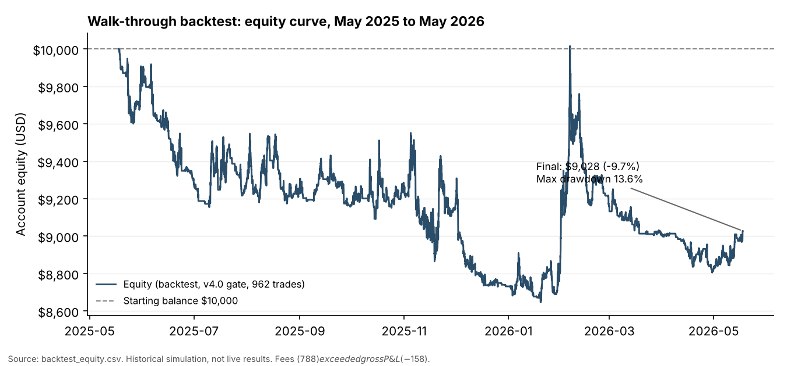

CryptoBot: validating a systematic futures signal before risking capital
The Ask
Can a rules-based signal engine for USDT-margined crypto perpetual futures show a real, repeatable edge once transaction costs, funding and out-of-sample testing are taken seriously? The goal was a research process I could defend, not a strategy that merely looked good on past data.
Approach
- Regime model. A two-layer BTC-anchored regime detector: a macro layer (daily 200-day SMA slope, RSI, higher-highs/higher-lows) and a tactical layer (4h ADX/DI, MACD histogram, EMA50), with a persistence filter so regimes must hold for three bars before they change the trading gate.
- Signal and gating. Directional gating by regime phase, key-level detection (swing points, multi-touch clusters, round numbers, trendlines, Fibonacci), and proximity filters.
- Risk and execution. Fixed stop-loss and take-profit, intracandle exit detection using 5-minute high/low, a cluster stop-loss cooldown, and a paper-trading simulator that tracks fees and funding.
- Validation. Walk-forward testing (8-month train, 4-month test) plus an audit of whether the backtest ran the same code as the live bot.
Result
The honest result is negative. I'm presenting it as a finding, not a failure to hide.
- Backtest (962 trades, May 2025 to May 2026, actual bot code): net −9.7% from $10,000, profit factor 0.91, win rate 33.7%, max drawdown 13.6%.
- Cost analysis: gross P&L was −$158; fees were $788 and funding $26. Trading costs, not the signal, drove the loss, so the edge was smaller than the fee load.
- Earlier overfit result: an earlier +24% backtest was run on different code from the deployed bot. Re-running on the live code gave −9.7%. Lesson: verify that the tested artifact is the deployed artifact.
- Walk-forward: only a few sub-strategies (pullback longs, certain hours and symbols) held their behaviour across windows. Most others flipped sign out of sample, so I restricted the system to the parts that held.
- Paper trading (May 2026, 73 trades): 39.7% win rate, +$418 with profit factor 1.79. Most of it came in the first week; the following weeks were weaker (38.5% and 25.0% win rate). One month of paper trading with 73 trades is too small a sample to call an edge.

What I took from it
- Walk-forward and out-of-sample testing are not optional. In-sample results were misleading by about 34 percentage points.
- Transaction costs must be modelled from the start. A signal with a small gross edge can be unprofitable after fees.
- Confirm that the backtest runs the same code as production, or results mean nothing.
- Next step: rebuild the signal engine with walk-forward discipline, and only keep components that hold across out-of-sample windows after costs.
This is a personal research project on paper trading, not a live trading record and not investment advice. No strategy has been shown to be profitable.